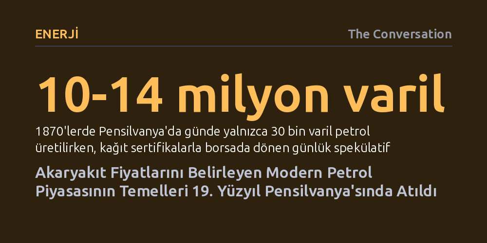

ENERJI · The Conversation · 2026-10-10
Günümüzde pompa fiyatlarını belirleyen vadeli petrol piyasası, 1870'lerde Pensilvanya'da fiziksel variller yerine kağıt sertifikaların alınıp satılmasıyla icat edildi. Hürmüz Boğazı'ndaki savaşın tetiklediği küresel fiyat dalgalanmaları da aynı spekülatif borsa mekanizması üzerinden tüketiciye yansıyor.
Akaryakıt istasyonunda ödediğimiz fiyatın kuyudaki çıkarma maliyetinden ziyade, 150 yıl önce geliştirilen ve fiziksel petrolden katbekat fazla kağıt sözleşmenin el değiştirdiği finansal borsalarda belirlendiğini gösterir.

2026 yılının sonbaharı, dünyanın uzak bir köşesinde patlak veren jeopolitik krizlerin sıradan insanların gündelik harcamalarını nasıl altüst edebildiğini acı biçimde ortaya koydu. ABD genelinde dizel yakıtın galon fiyatı 6 ila 6,5 dolar seviyesine tırmanırken, Alaska gibi uzak bölgelerde kurşunsuz benzin 9 dolar sınırını aştı. Tarımdan taşımacılığa kadar tüm sektörleri sarsan bu ani artışın gerisinde, 28 Şubat 2026'da ABD ve İsrail'in İran'a yönelik hava saldırıları ve ardından Hürmüz Boğazı çevresinde tırmanan sıcak çatışmalar bulunuyor.
İran'ın ticari gemilere saldırılar düzenlemesi ve uluslararası deniz taşımacılığı sigortalarının peş peşe iptal edilmesi, Hürmüz Boğazı'ndaki tanker trafiğini durma noktasına getirdi. Küresel petrol akışının beşte biri normal şartlarda bu dar su yolundan geçiyor. Taşınan petrolün büyük bölümü doğrudan ABD'ye değil Asya pazarlarına gidiyor olsa da ham petrol küresel ve birbirine entegre bir piyasada fiyatlandığı için fatura tüm dünyaya kesildi. Üreticilerin alternatif boru hatları ve korumalı rotalar devreye sokarak akışın bir kısmını kurtarması ham petrolü 100 dolar civarında tutsa da, pompa fiyatları savaştan önceki döneme kıyasla yüzde 50 civarında yükseldi. Tüketiciyi asıl şaşırtan soru ise şu: Binlerce kilometre ötedeki askeri bir çatışma, mahallemizdeki benzin istasyonunun tabelasını birkaç gün içinde nasıl bu denli doğrudan değiştirebiliyor?
Bugün dünya ekonomisini yönlendiren bu karmaşık fiyatlandırma mimarisinin kökleri, neredeyse 170 yıl öncesine, kuzeybatı Pensilvanya'nın ücra ormanlarına kadar uzanıyor. 1859 yılında Edwin Drake, Massachusetts'li yatırımcıların finansal desteğiyle Titusville yakınlarında zengin bir petrol damarı keşfetti. Yatırımcıların asıl gayesi, o dönemde hem temini zorlaşan hem de aşırı pahalanan balina yağına alternatif bir aydınlatma kaynağı bulmaktı. Ancak keşif gerçekleştikten hemen sonra sektör bambaşka bir belirsizlikle karşı karşıya kaldı: O günlerde "kaya yağı" olarak adlandırılan bu ham madde tam olarak ne işe yarayacaktı ve değeri nasıl belirlenecekti?
Pittsburgh'un yaklaşık 140 kilometre kuzeyindeki Oil City sokaklarında başlayan ilk petrol ticareti, hiçbir yazılı kuralı olmayan son derece ilkel bir takas düzenine dayanıyordu. Sektör genişledikçe tüccarlar daha organize bir yöntem geliştirdi: Oil Creek Demiryolu üzerinde seyahat eden bir yolcu vagonu seyyar bir petrol borsasına dönüştürüldü. Titusville ile Oil City arasında günde 13 durak yapan bu trende, hiçbir makbuz veya sertifika kullanılmaksızın, tamamen sözlü beyan ve şeref sözü esasına göre ticaret yapılıyordu. Petrol üretimi ivme kazandıkça bu seyyar borsa yetersiz kaldı ve işlemler önce yerel otel lobilerine, ardından kalıcı binalara taşındı.
1874 yılına gelindiğinde Pensilvanya Petrol Vadisi günde yaklaşık 30 bin varil ham petrol üretiyor ve petrolün varili ortalama 1,15 dolardan alıcı buluyordu. Ancak binlerce varili at arabalarıyla taşımak, depolamak ve her satışta fiziki olarak el değiştirmek lojistik açıdan sürdürülemez bir tıkanıklık yarattı. Çözüm, ticaretin fiziksel varillerden kağıt evraka taşınmasıyla bulundu. Boru hattı işletmecileri, hatlarına giren ham petrol karşılığında mülkiyeti temsil eden kağıt sertifikalar basmaya başladı.
Tüccarlar artık petrol varillerini değil, bu sertifikaları alıp satıyordu. Dahası, aynı petrolü temsil eden bir sertifika tek bir gün içerisinde defalarca el değiştirebiliyordu. Sonuç olarak borsadaki günlük işlem hacmi 10 milyon ila 14 milyon varile kadar fırladı. Yani kağıt üzerindeki ticaret hacmi, kuyulardan fiilen çıkarılan fiziki petrol miktarının yüzlerce katına ulaştı. 1878'de kapılarını açan Oil City Petrol Borsası, dönemin yerel basını tarafından "bölgede inşa edilmiş en büyük ve en gösterişli yapı" olarak selamlandı. Bu görkem, ham madde ticaretinin ne denli büyük bir spekülatif finans piyasasına dönüştüğünün somut kanıtıydı.
Oil City Borsası yirmi yıla yakın bir süre boyunca ham petrol fiyatının belirlenmesinde merkezi bir rol oynadı. Borsadaki aracılar alıcılardan varil başına 10 sent, satıcılardan ise 5 sent komisyon alarak devasa bir servet döndürüyordu. John D. Rockefeller'ın yönettiği Standard Oil şirketi de borsa binasında ofis tutmuştu. Ancak 1895 yılına gelindiğinde Standard Oil piyasayı fiilen tekeline almayı başardı. Şirketin baş satın almacısı Joseph Seep, üreticilere borsadaki dalgalı fiyat yerine Standard Oil'in kendi belirlediği sabit nakit fiyatı teklif etmeye başlayınca bağımsız borsa önemini yitirdi. Bu mutlak kontrol, ABD Yüksek Mahkemesi'nin 1911 yılındaki tarihi antitröst kararıyla Rockefeller tröstünü 34 ayrı şirkete bölmesine kadar devam etti.
Tekelin dağıtılmasının ardından petrol fiyatı hiçbir şirketin tekeline bırakılmadı. Özellikle 1970'lerde yaşanan küresel petrol krizleri ve ani fiyat şokları, gelecekteki fiyat riskini yönetebilecek daha gelişmiş bir mekanizmayı zorunlu kıldı. Böylece sistem, günümüzde New York Ticaret Borsası (NYMEX) ve Intercontinental Exchange (ICE) gibi modern vadeli işlem borsalarına devredildi. Cushing'deki boru hattı ve depolama merkezine dayalı vadeli sözleşmeler, petrol fiyatının saniyeler içinde yeniden hesaplandığı ana gösterge haline geldi.
Oil City'deki o gösterişli petrol borsası binası bugün yerinde yok; 1926 yılında bir banka şubesine yer açmak amacıyla yıkıldı. Ne var ki 19. yüzyıl tüccarlarının orada icat ettiği piyasa mantığı tüm dünyayı yönetmeyi sürdürüyor. Fiziksel petrolün varil varil taşınmasından çok daha hızlı biçimde el değiştiren kağıt sözleşmeler ve finansal beklentiler, bugün akaryakıt pompalarında karşılaştığımız fiyat etiketini belirlemeye devam ediyor.
İster 1870'lerin Pensilvanya'sında elden ele dolaşan boru hattı sertifikaları olsun, ister 2026'da Hürmüz Boğazı'ndaki füzelerin tetiklediği vadeli işlem dalgalanmaları; tüketicinin ödediği nihai bedel, kuyunun başındaki fiziki maliyetten ziyade finansal piyasaların risk algısıyla belirleniyor. Pensilvanya'nın vadilerinde doğan spekülatif ticaret modeli, küresel enerji sisteminin en belirleyici kuralı olmayı sürdürüyor.